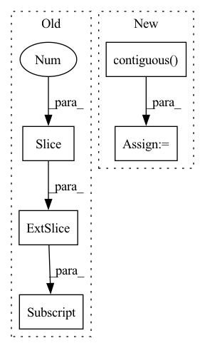

Pattern ID :11501
Before Change
coarse_samples = coarse_samples[:, :-1, :].contiguous()
coarse_rgbo = coarse_net.forward(coarse_samples)
coarse_rendered, normed_weights = NeRF.render(coarse_rgbo, coarse_lengths, coarse_samples[:, :, 3:6].norm(dim = -1))
loss = loss_func(coarse_rendered, coarse_samples[:, 0, -3:] )
fine_samples, fine_lengths = inverseSample(normed_weights, coarse_cams, fine_sample_pnum, near_t, far_t)
fine_samples, fine_lengths = NeRF.coarseFineMerge(coarse_cams, coarse_lengths, fine_lengths) // (ray_num, 192, 6)
// 此处存在逻辑问题，需要第二次sort，并且RGB需要整理出来After Change
// coarse_lengths:torch.Tensor = torch.zeros(sample_ray_num, coarse_sample_pnum, dtype = torch.float32).cuda()
// sampling(train_images, train_cam_tf, coarse_samples, coarse_lengths, sample_ray_num, coarse_sample_pnum, train_focal, near_t, far_t)
coarse_cams = coarse_samples[:, -1, :-3].contiguous()
gt_rgb = coarse_samples[:, -1, -3:].contiguous()
coarse_samples = coarse_samples[:, :-1, :].contiguous()
coarse_rgbo = coarse_net.forward(coarse_samples)
coarse_rendered, normed_weights = NeRF.render(coarse_rgbo, coarse_lengths, coarse_samples[:, :, 3:6].norm(dim = -1))
loss = loss_func(coarse_rendered, gt_rgb)
fine_samples, fine_lengths = inverseSample(normed_weights, coarse_cams, fine_sample_pnum, near_t, far_t)
fine_samples, fine_lengths = NeRF.coarseFineMerge(coarse_cams, coarse_lengths, fine_lengths) // (ray_num, 192, 6)
// 此处存在逻辑问题，需要第二次sort，并且RGB需要整理出来
fine_rgbo = fine_net.forward(fine_samples)
fine_rendered, _ = NeRF.render(fine_rgbo, fine_lengths, fine_samples[:, :, 3:6].norm(dim = -1))
loss = loss + loss_func(fine_rendered, gt_rgb)
train_timer.toc()
opt_c.zero_grad()In pattern: SUPERPATTERN
Frequency: 4
Non-data size: 5
Instances Fragment ID: 39180821
Project Name: enigmatisms/nerf
Commit Name: 06ab00cc67df78b580773caa3b55f80013328bd1
Time: 2022-04-01
Author: 984041003@qq.com
File Name: train.py
M Class Name: AnonimousClass
N Class Name: AnonimousClass
M Method Name: main(0)
N Method Name: main(0)
M Parent Class:
N Parent Class:
M File Name: train.py
N File Name: train.py
M Start Line: 56
M End Line: 138
N Start Line: 56
N End Line: 139
Before Change
datas = corpus["target_idx"] // b * max_len
targets = datas[:, 1:] // b*max_length-1
batch_size, seq_len = targets.size()
_, feature_array, goal_array, leak_out_array = self.leakgan_forward(targets, dis, if_sample=False,
no_log=False, start_letter=self.start_idx)After Change
// Worker loss
work_nll_loss = self.worker_nll_loss(targets, leak_out_array) // batch_size * seq_len
work_nll_loss = work_nll_loss.contiguous() .reshape((batch_size, seq_len))
work_nll_loss = torch.sum(work_nll_loss, dim=1) // bs
worker_loss = torch.mean(work_nll_loss)
Fragment ID: 39180820
Project Name: rucaibox/textbox
Commit Name: 9b5a6ec4e4a248b42892f4a8b7efc8a9a25630f7
Time: 2020-12-14
Author: 1318829605@qq.com
File Name: textbox/module/Generator/LeakGANGenerator.py
M Class Name: LeakGANGenerator
N Class Name: LeakGANGenerator
M Method Name: calculate_loss(3)
N Method Name: calculate_loss(3)
M Parent Class: UnconditionalGenerator
N Parent Class: UnconditionalGenerator
M File Name: textbox/module/Generator/LeakGANGenerator.py
N File Name: textbox/module/Generator/LeakGANGenerator.py
M Start Line: 92
M End Line: 101
N Start Line: 91
N End Line: 95
Before Change
if args.model_type in ["bart", "mbart"]:
// this should have been handled internally by huggingfaces"s BART code
// TODO remove this once they add it
decoder_input_ids = labels[:, :-1] .contiguous()
decoder_input_ids[decoder_input_ids == args.mlm_ignore_index] = tokenizer.pad_token_id
lm_labels = labels[:, 1:].clone()
model_inputs["decoder_input_ids"] = decoder_input_idsAfter Change
// labels = labels[:, 1:].clone()
outputs = model(**model_inputs)
lm_logits = outputs[0].contiguous()
assert lm_logits.shape[-1] == model.config.vocab_size
// CrossEntropyLoss ignore_index defaults to -100
// If a different mlm_ignore_index is provided we make sure it is ignored when calculating the loss
ce_loss_fct = torch.nn.CrossEntropyLoss(ignore_index=args.mlm_ignore_index)
loss = ce_loss_fct(lm_logits.view(-1, lm_logits.shape[-1]), labels.view(-1))
if args.n_gpu > 1:
loss = loss.mean() // mean() to average on multi-gpu parallel training Fragment ID: 39180817
Project Name: stanford-oval/genienlp
Commit Name: b84a6548a69fd9f62652eed1c74fd4b1fdb8b65b
Time: 2020-11-15
Author: mehrad@stanford.edu
File Name: genienlp/paraphrase/run_lm_finetuning.py
M Class Name: AnonimousClass
N Class Name: AnonimousClass
M Method Name: train(4)
N Method Name: train(4)
M Parent Class:
N Parent Class:
M File Name: genienlp/paraphrase/run_lm_finetuning.py
N File Name: genienlp/paraphrase/run_lm_finetuning.py
M Start Line: 182
M End Line: 207
N Start Line: 190
N End Line: 219
Before Change
datas = corpus["target_idx"] // b * max_len
targets = datas[:, 1:] // b*max_length-1
batch_size, seq_len = targets.size()
_, feature_array, goal_array, leak_out_array = self.leakgan_forward(targets, dis, if_sample=False,
no_log=False, start_letter=self.start_idx)After Change
// Worker loss
work_nll_loss = self.worker_nll_loss(targets, leak_out_array) // batch_size * seq_len
work_nll_loss = work_nll_loss.contiguous() .reshape((batch_size, seq_len))
work_nll_loss = torch.sum(work_nll_loss, dim=1) // bs
worker_loss = torch.mean(work_nll_loss)
Fragment ID: 39180815
Project Name: rucaibox/textbox
Commit Name: f78c75cd5c890e60a063e95617768f9402a1d553
Time: 2020-12-14
Author: 1318829605@qq.com
File Name: textbox/module/Generator/LeakGANGenerator.py
M Class Name: LeakGANGenerator
N Class Name: LeakGANGenerator
M Method Name: calculate_loss(3)
N Method Name: calculate_loss(3)
M Parent Class: UnconditionalGenerator
N Parent Class: UnconditionalGenerator
M File Name: textbox/module/Generator/LeakGANGenerator.py
N File Name: textbox/module/Generator/LeakGANGenerator.py
M Start Line: 92
M End Line: 101
N Start Line: 91
N End Line: 95